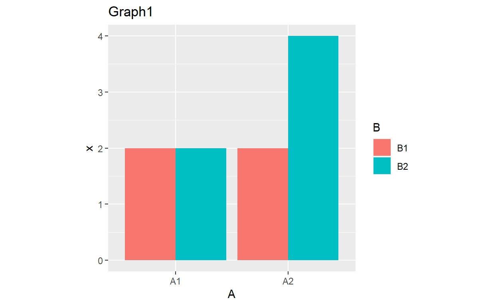
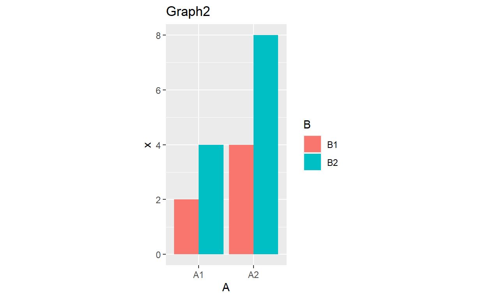
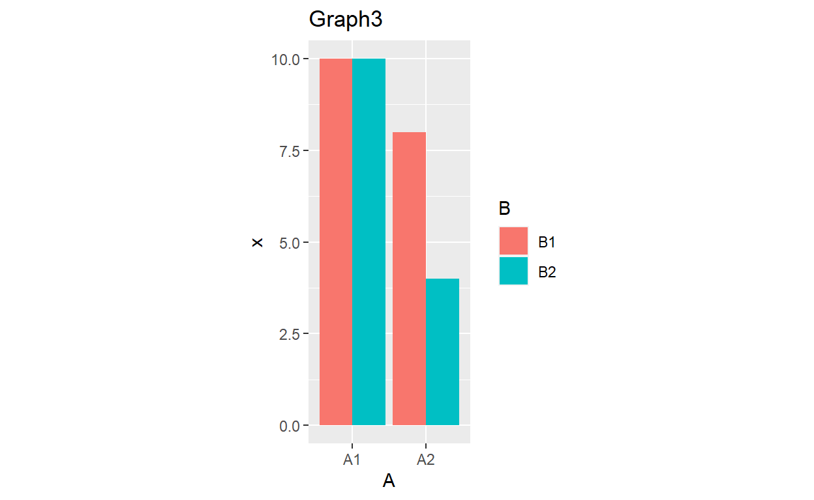
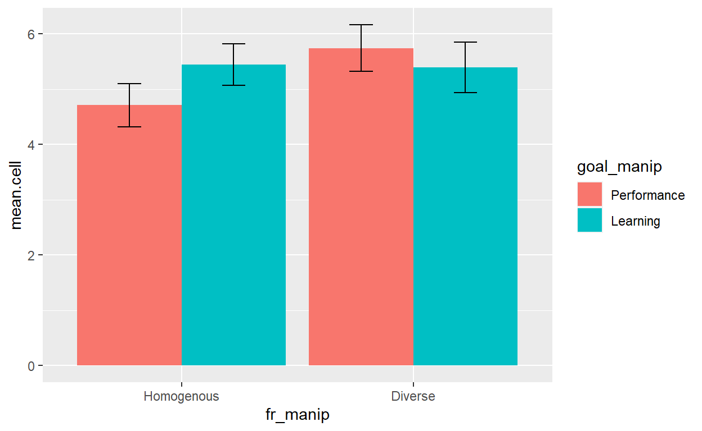
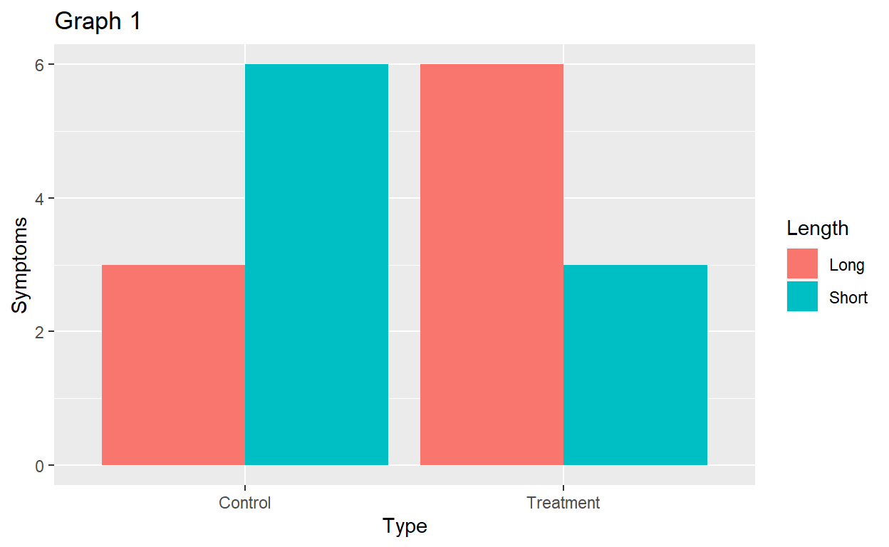
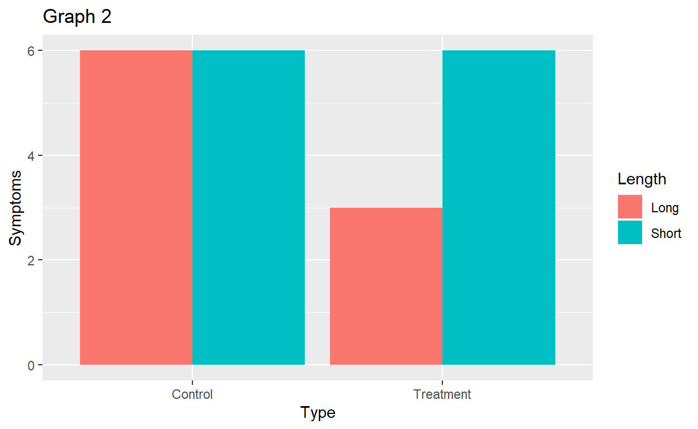
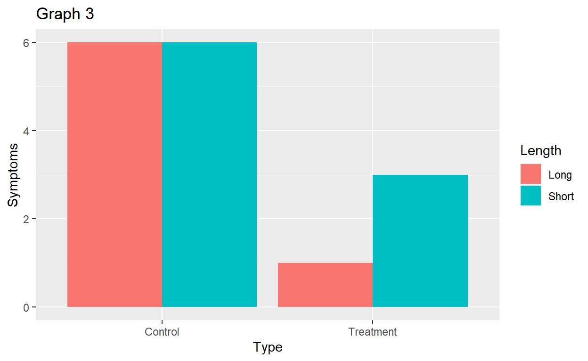

Factorial ANOVA
Overview
This tutorial focuses on the two factor ANOVA with a particular emphasis on interpreting interactions. I also discuss effect sizes, simple effects tests, assumptions, Bayes Factors, and APA style.
NOTE: THIS TUTORIAL RENDERS BEST IN A BROWSER WINDOW. Use the button in the upper left hand corner to open in browser window.
The PowerPoint slides for the presentation in the videos are on Canvas if you want a standalone copy.
The videos (as well as others) can also be found on my YouTube channel https://www.youtube.com/channel/UC5kDZTyHZlgSgSEa3YQXOi
Credit to our oldest, Ernesto Aberson for his work creating the Jewish Space Lasers thumbnail. Credit also to GOP Congresswoman Marjorie Taylor Greene - this artwork would not exist if not for her crazy beliefs.
Learning Objectives
Define the different types of Sums of Square in the two factor context
Explain the conditions for applying the Two Factor ANOVA
Compute Sums of Squares, degrees of freedom, Mean Square, and F
Given a problem, define the null and alternative hypotheses
Apply the above procedures to making decisions about null hypotheses
Describe and calculate partial eta-squared as a measure of effect size
Graph and interpret interaction effects
Use R to compute ANOVA and eta-squared
Excitedly tell your friends and family about interaction effects
Apply simple effects tests to formally evaluation interactions
Test assumptions for a factorial ANOVA
Get really worked up about why partial eta-squared is terrible
Data
Green1 is the datafile used in exercises. These data how goals and partner friendship network influence a number of perceptions. These data include two factors, goal_manip and fr_manip and two DVs positive emotions (XPosEmo) and overall attitude measure (XMeta).
Green, D. J., Wout, D. A., & Murphy, M. C. (in press). Learning goals mitigate identity threat for Black individuals in threatening interracial interactions. Cultural Diversity and Ethnic Minority Psychology. https://doi.org/10.1037/cdp000033
Packages
This tutorial uses the following new packages:
lsrfor effect sizescarfor ANOVA computationsggplot2for graphingBayesFactorfor … I shouldn’t have to tell you what theBayesFactordoes.phiafor simple effects and making all the work I did writing code to calculate simple effects in previous semesters obsolete.
Video I Introduction
Quiz 1
Video II Calculations
Exercise Calculations
\(\large SS_{Total}=\Sigma(x-\bar{x}_t)^2\)
\(\large SS_{Between}=\Sigma n_{cell}(\bar{x}_{cell}-\bar{x}_t)^2\)
\(\large SS_{Within}=\Sigma(x-\bar{x}_{cell})^2\)
\(\large SS_{A}=\Sigma n_{A}(\bar{x}_{A}-\bar{x}_t)^2\) \(\large SS_{B}=\Sigma n_{B}(\bar{x}_{B}-\bar{x}_t)^2\) \(\large SS_{AxB}=SS_{BG}-SS_{A}-SS_{B}\)
\(\large MS_{Between}=\frac{SS_{Between}}{df_{Between}}\)
\(\large MS_{Within}=\frac{SS_{Within}}{df_{Within}}\)
\(\large \eta^2=\frac{SS_{Between}}{SS_{Total}}\)
\(\large MS_{A}=\frac{SS_{A}}{df_{A}}\)
\(\large df_{A}=A-1\)
\(\large F_{A}=\frac{MS_A}{df_A}\)
\(\large MS_{B}=\frac{SS_{B}}{df_{B}}\)
\(\large df_{B}=B-1\)
\(\large F_{B}=\frac{MS_B}{df_B}\)
\(\large MS_{AxB}=\frac{SS_{AxB}}{df_{AxB}}\)
\(\large df_{AxB}=(A-1)(B-1)\)
\(\large F_{AxB}=\frac{MS_{AxB}}{df_{AxB}}\)
\(\large MS_{Within}=\frac{SS_{Within}}{df_{Within}}\)
\(\large F = \frac{MS_{Between}}{MS_{Within}}\)
\(\large \eta^2_A=\frac{SS_{A}}{SS_{Total}-SS_B-SS_{AxB}}\)
\(\large \eta^2_B=\frac{SS_{B}}{SS_{Total}-SS_A-SS_{AxB}}\)
\(\large \eta^2_{AxB}=\frac{SS_{AxB}}{SS_{Total}-SS_A-SS_{B}}\)
| A | B | x |
|---|---|---|
| A1 | B1 | 2 |
| A1 | B2 | 4 |
| A1 | B1 | 4 |
| A1 | B2 | 6 |
| A2 | B1 | 8 |
| A2 | B2 | 10 |
| A2 | B1 | 12 |
| A2 | B2 | 14 |
Video III Interpreting Interactions
Quiz

Video IV: Example and R
Factorial ANOVA in R
Factorial ANOVA in R looks a lot like one factor ANOVA, but there is some extra code to get the correct sums of squares. There are numerous types of SS and ways to conduct ANOVA but only one type that is relevant to situations when we test interactions.
The first line of code sets the correct contrast.
The second conducts the ANOVA, writing it to an object (anova2F).
The third line uses the car package to produce the correct sums of squares.
The final line produces the effect size using lsr.
options(contrasts=c("contr.helmert", "contr.poly"))
anova2F<-lm(XPosEmo~goal_manip*fr_manip, data=Green1)
car::Anova(anova2F, type = 3)lsr::etaSquared(anova2F)## eta.sq eta.sq.part
## goal_manip 0.006746254 0.007337027
## fr_manip 0.034722300 0.036647904
## goal_manip:fr_manip 0.044914142 0.046900447Exercise
Using the Green1 data, predict attitudes (XMeta) from goal_manip and fr_manip.
options(contrasts=c("contr.helmert", "contr.poly"))
ex<-lm(XMeta~goal_manip*fr_manip, data=Green1)
car::Anova(ex, type = 3)
lsr::etaSquared(ex)Descriptive Statistics
One last useful piece are descriptive statistics. As before the tapply command can deliver those
tapply(Green1$XPosEmo,list(Green1$goal_manip,Green1$fr_manip),mean)## Homogenous Diverse
## Performance 4.710526 5.741176
## Learning 5.444737 5.394737tapply(Green1$XPosEmo,list(Green1$goal_manip,Green1$fr_manip),sd)## Homogenous Diverse
## Performance 1.183396 1.206577
## Learning 1.151661 1.376236Adapt the code above to produce descriptive statistics for your analyses.
tapply(Green1$XMeta,list(Green1$goal_manip,Green1$fr_manip),mean)
tapply(Green1$XMeta,list(Green1$goal_manip,Green1$fr_manip),sd)(We will graph the relationship in the next section)
Quiz
## eta.sq eta.sq.part
## goal_manip 0.008964601 0.009752938
## fr_manip 0.027046045 0.028856786
## goal_manip:fr_manip 0.052891096 0.054917792## Homogenous Diverse
## Performance 4.596491 5.669118
## Learning 5.447368 5.289474## Homogenous Diverse
## 5.02193 5.46875## Performance Learning
## 5.103009 5.368421Video 5: Simple effects
Graphing with ggplot2
Before we interpret our effects, it is useful to view them graphically. This involves some minor changes to the ggplot2 code we used for the one factor. I highlight the new pieces of code below.
As before group_by and summarise break down our means, standard deviations, and standard errors. For this graph, we are now doing this by cell. There are a couple of changes to accomplish this. First, the group_by command now includes both factors, separated by a comma.
The other changes is to the ggplot code. x is = one factor, y = outcome variable, fill = the other factor. Generally, fill should be the factor with the fewest levels (not an issue here as they both have two).
yy<-Green1 %>%
group_by(fr_manip,goal_manip) %>%
summarise(mean.cell = mean(XPosEmo, na.rm = TRUE),
sd.cell = sd(XPosEmo, na.rm = TRUE),
n.cell = n()) %>%
mutate(se.cell = sd.cell / sqrt(n.cell),
lower.ci.cell = mean.cell - qt(1 - (0.05 / 2), n.cell - 1) * se.cell,
upper.ci.cell = mean.cell + qt(1 - (0.05 / 2), n.cell - 1) * se.cell)## `summarise()` has grouped output by 'fr_manip'. You can override using the `.groups` argument.ggplot(yy, aes(x=fr_manip, y=mean.cell,fill=goal_manip)) +
geom_bar(position=position_dodge(), stat="identity") +
geom_errorbar(aes(ymin=lower.ci.cell, ymax=upper.ci.cell),
width=.2,
position=position_dodge(.9))
Exercise
Adapt the ggplot2 code to make a graph for your analysis.
yy<-Green1 %>%
group_by(fr_manip,goal_manip) %>%
summarise(mean.cell = mean(XMeta, na.rm = TRUE),
sd.cell = sd(XMeta, na.rm = TRUE),
n.cell = n()) %>%
mutate(se.cell = sd.cell / sqrt(n.cell),
lower.ci.cell = mean.cell - qt(1 - (0.05 / 2), n.cell - 1) * se.cell,
upper.ci.cell = mean.cell + qt(1 - (0.05 / 2), n.cell - 1) * se.cell)
ggplot(yy, aes(x=fr_manip, y=mean.cell,fill=goal_manip)) +
geom_bar(position=position_dodge(), stat="identity") +
geom_errorbar(aes(ymin=lower.ci.cell, ymax=upper.ci.cell),
width=.2,
position=position_dodge(.9))Simple effects in R
Simple effects tests are necessary to decompose interactions. With simple effects we are focusing on the effect of one factor at each individual level of the other. The phia package conducts these tests simply. The code for the testinteractions command requires an object (xx) that captures the analysis, fixed refers to the factor that you examine condition by condition, and the across command sets the variable to compare across each level of the fixed factor.
Note: If you have a design that has more than two levels (e.g. a 2x3 ANOVA), it is usually best to set the factor with the most levels as fixed.
options(contrasts=c("contr.helmert", "contr.poly"))
xx<-lm(XPosEmo~goal_manip*fr_manip, data=Green1)
phia::testInteractions(xx,fixed = c("goal_manip"), across="fr_manip",adjustment="none")Video 6: Why I hate partial eta-squared
Quiz
Video VIII: APA Style
APA Style Write-up
In this section we will review how to present findings in APA style.
## eta.sq eta.sq.part
## goal_manip 0.006746254 0.007337027
## fr_manip 0.034722300 0.036647904
## goal_manip:fr_manip 0.044914142 0.046900447## Homogenous Diverse
## Performance 4.710526 5.741176
## Learning 5.444737 5.394737## Homogenous Diverse
## Performance 1.183396 1.206577
## Learning 1.151661 1.376236## Performance Learning
## 5.197222 5.419737## Performance Learning
## 1.294188 1.260690## Homogenous Diverse
## 5.077632 5.558333## Homogenous Diverse
## 1.217276 1.301543A 2x2 between subjects ANOVA examined the relationship between goals and friendship diversity on Positive emotions. Those participants who believed they were interacting with a partner who had a diverse group of friends (M = 5.56, S = 1.30) reported more positive emotions than those interacting with a partner with homogeneous friends (M = 5.08, S = 1.22), F(1,144)=5.84, p=.02, partial \(\eta^2\) = .037. There was no difference between participants given learning (M = 5.42, S = 1.26) rather than performance goals (M = 5.20, S = 1.29), F(1,144)=0.90, p=.34, partial \(\eta^2\) = .007.
These findings are qualified by a significant interaction, F(1,144)=7.09, p=.008, partial \(\eta^2\) = .014. Simple effects tests reveal that in the performance conditions, interactions with a partner with diverse friends (M = 5.74, S = 1.21) related to more positive emotions than interacting with someone with homogeneous fiends (M = 4.71, S = 1.18), F(1,144)=12.53, p<.001, partial \(\eta^2\) = .08. In the learning condition, interactions with a partner with diverse friends (M = 5.40, S = 1.38) produced similar positive emotions compared to interacting with someone with homogeneous fiends (M = 5.44, S = 1.15), F(1,144)=0.03, p=.86, partial \(\eta^2\) = .00.
Interaction Interpretations
Interpreting interactions can be very tricky. With that in mind, I’ve provided some additional practice for graphical interpretation. I have tried to provide examples that show the most common patterns you will encounter.

Quiz
Congratulations! You’ve reached the end of the tutorial.